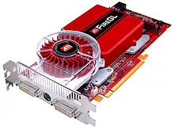
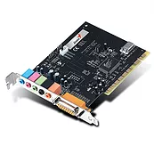
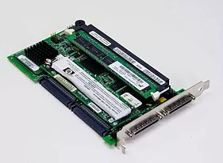
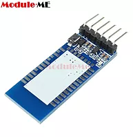

Tarjetas
Tarjetas
La mayoría de los computadores tienen ranuras de expansión que te permiten añadir diferentes tipos de tarjetas. Estas tarjetas se conocen como tarjetas PCI (Componente Periférico Interconectado); es posible que no sea necesario agregar las tarjetas PCI a tu computador porque la mayoría ya traen instaladas todas las tarjetas, ya sea la de video, sonido o red. Clasificacion De las Tarjetas
Clasificacion De las Tarjetas
Tarjetas De Video
Procesa toda la información que ves en el monitor. La mayoría de los equipos tienen una tarjeta integrada en la placa base en lugar de tener una tarjeta de video separada. Si te gustan mucho los video juegos, puedes agregar una tarjeta de video más rápida a una de las ranuras de expansión.
Tarjetas De Sonido
Esta tarjeta es la responsable de lo que se oye en los altavoces o audífonos. La mayoría de las computadoras tienen integrada la tarjeta de sonido dentro de su placa madre, pero ésta se puede actualizar comprando una que tenga mayor calidad.
Tarjetas En Red
Le permite al computador conectarse a una red. La tarjeta de red se puede conectar a un cable Ethernet o a una red inalámbrica también conocida como Wi-Fi.

Tarjetas Bluetooth
Bluetooth es una tecnología de comunicación inalámbrica en distancias cortas. A menudo, se utiliza en los ordenadores para comunicarse con teclados inalámbricos, ratones e impresoras.
Tarjetas Controladoras IDE
Es una tarjeta para expansión que permite la conexión de varios tipos de dispositivos internos IDE ("Integrated Device Electronic"), esto es discos duros y unidades ópticas, así como disqueteras y ciertos puertos. Este tipo de tarjetas integran uno o varios puertos para conectar los dispositivos externos tales como el ratón, la impresora, el escáner, etc.
Tarjetas Controladoras SCSI
Es una tarjeta para expansión de capacidades que permite la conexión de varios tipos de dispositivos internos SCSI ("Small Computer System Interface"), esto es principalmente discos duros y puertos. . Este tipo de tarjetas integran uno o varios puertos para conectar los dispositivos externos tales como unidades lectoras de CD-ROM, escáneres y algunos tipos de impresoras entre otros.
